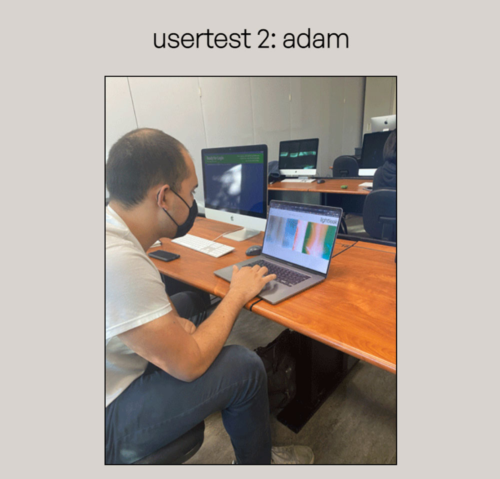
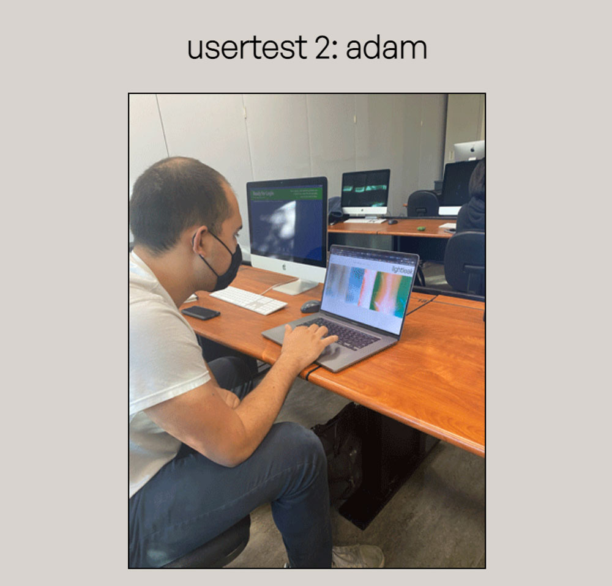

Process
Initial Brainstorm
My initial brainstorm for this site was prompted by a game I made for a web
development class at UC Davis, as well as my passion for film photography as a hobby
and artistic medium.
Around the office building where I worked at the time, there existed a band of stray
cats, and one day I took a series of photos of them on my Pentax K1000. I chose to
create a game in which the user would click through a series of my photos with the
intention of finding each cat.
The user was able to click on various points of interests to zoom in/out and move
around the office building during their search. The game was inspired by a desire to
use/share my film photos through web dev projects, so I chose to dive into that
desire and make an entire website dedicated to my hobby.
***here are my initial notes for the cat game**
Initial UX/UI Design
Before the coding process, I created several prototypes in Adobe XD to work from. I made these with several points of emphasis in mind:
- Photography should be easily accessible and pleasant to view with as much user control as possible
- Design should be as minimal, readable, and accessible as possible while still maintaining a tasteful and purposeful feeling
- Follow brutalist web design aesthetics while incorporating calm, earthy, and less stark color schemes
- Emphasize images
- Utilize captions and accompanying text for my images sparingly
- Include cat game as bonus area
I designed a homepage displaying circles for “featured collections” – which
could then be clicked to go to the corresponding photoshoot. It was my hope that
this would enable immediate user interest and interaction.
I designed the individual “collection pages” largely around images – with a
scrollable gallery displaying large images. To fulfill my desire of maximum user
control/interaction, I included a “control center” showing key controls for the user
to apply filters to the images in the gallery. Also included was a minimal
navigation bar and the title of the photoshoot. One feature not included in my
wireframes that would be added in my first working prototype is a "down arrow" below
the image slideshow that would display a menu with info about the shoot.
I also designed an archive page, where the user could view every single one of my
photos in a large gallery. Finally, I designed the game page in a minimal fashion,
with the game itself at the center of the page and constantly visible
controls/instructions.
User Testing
 

After building a working draft of my site faithful to the design of my protoypes, I began my user testing process, in which I allowed three of my peers to interact with my site with no direction or context. After this, I would ask for their favorite parts of the site, as well as things they found unclear / suggestions for improvements. I’ve summarized the result of each user test here [please note the screenshot of the working prototype for reference on their critiques] :
- Alessandra: During Alessandra's testing, the action of clicking the down arrow to display "info" was not immediately apparent, and so she completely ignored it until afterwards when I told her about it. Instead, she thought that it was saying to scroll down. Also, Alessandra's first instinct was to scroll horizontally instead of vertically to navigate the photo slideshow. I will take all this advice into account and add more scrolling functionality + redesign the down arrow.
- Adam: Adam was also working on a photography site that displayed our photos in slideshows, so we exchanged some helpful and relevant ideas (most notably, a way to enable both vertical and horizontal scrolling on a horizontal slideshow). Adam thought that the "collections" page seemed redundant when compared to the home page, since they serve incredibly similar purposes. Also, he thought that the arrow for info was unclear, and should perhaps be changed to a button saying "info" or something along those lines.
- Guan: Guan really enjoyed the filter controls for the images, but he suggested that the phrasing for the instructions could be clearer, like "press 'g' for grayscale" instead of "'g' for grayscale." He also echoed the sentiment that the down arrow for info was vague, and should be changed into something more clear that better communicated its purpose. This issue was echoed throughout all my user tests, so I will be sure to address it in my final product.
Implementation & Final Result
The final design of my website was faithful to my initial design, with several
accessibility changes based off user tests, and personal brainstorming.
I maintained my homepage design and centered the page around featured circle links
and added a hue-rotate filter on hover to hint towards the filter interactions
afforded to the user. I changed the “ALL” link from my wireframes to a “random”
link, which will take the user to a random photoshoot page. Not only is this a fun
option for the indecisive viewer, but it also removes the redundancy given the
“collections” link in the navigation menu.
In line with a common critique during user testing, I replaced the “down arrow”
leading to the info section with a large, interactive “info” button, complete with
hover animations and color change. This makes its purpose clear, fun, and
unambiguous. I chose to retain my “controls” menu from the prototype, as I believe
the wording makes for a fun feeling of discovering a hidden feature in key controls
to interact with the photos as the user. Perhaps the biggest addition to the user
page was diverse scrolling functionality, allowing the user to scroll through the
image gallery using both horizontal and vertical scrolling on their trackpad.
Everybody that had tested my website before this point was compelled to scroll in a
different direction, so this solved that conundrum and made a “wrong choice”
impossible.
A large addition to the site is the “collections” page – with a menu of all my
photoshoots to date that can be scrolled through/cycled using arrow buttons. Next to
the menu exists an empty circle, which will be filled in with a preview of each
photoshoot when hovering over the corresponding title.